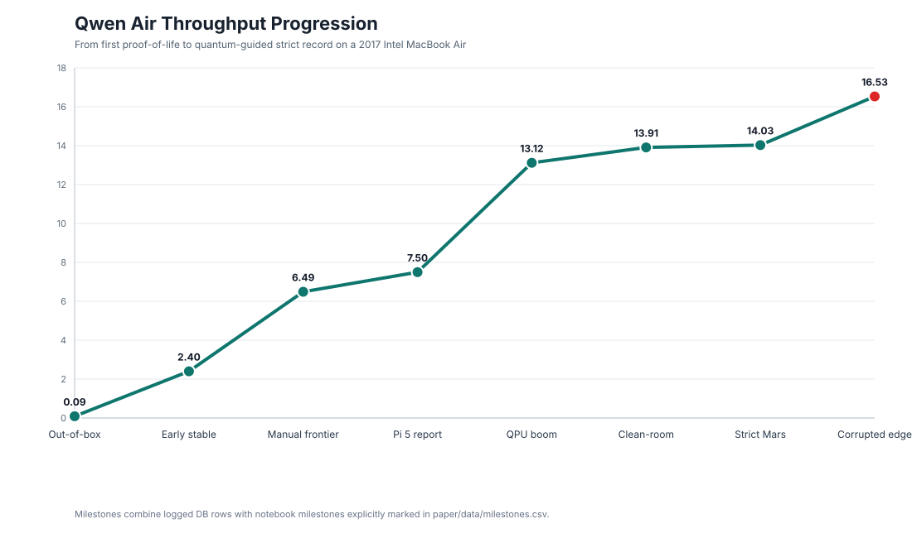
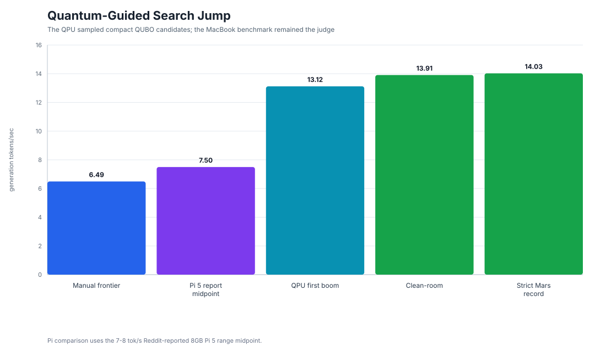
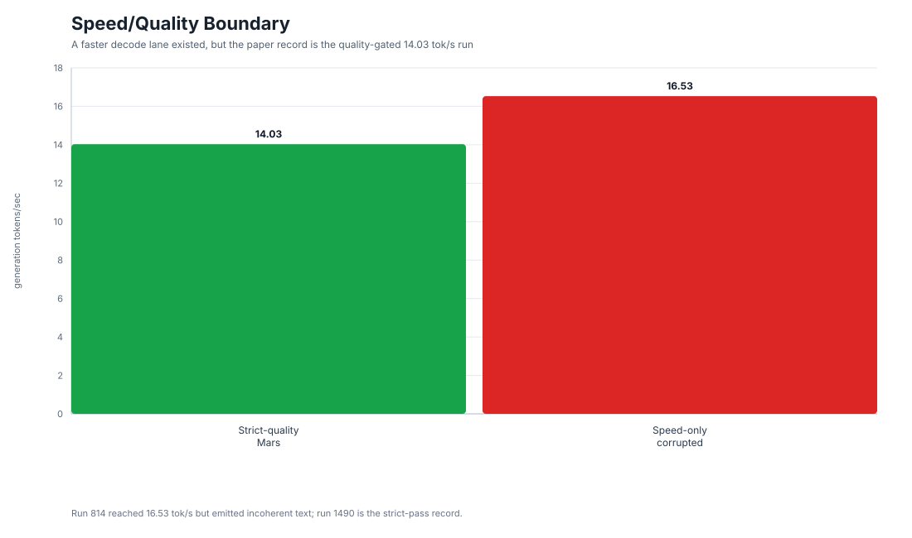
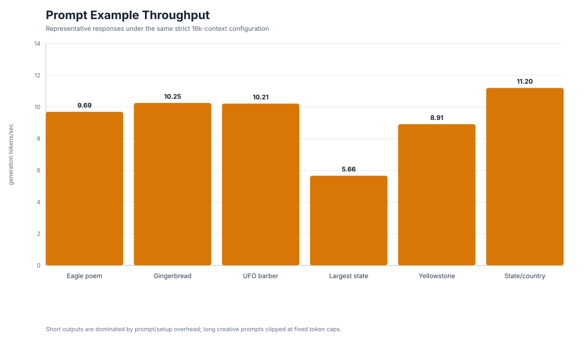

The result
The project improved local CPU-only inference from a proof-of-life baseline of about 0.09 generation tokens/sec to a strict quality-gated 14.03 tokens/sec at 16,384 context on an 8GB Intel MacBook Air.
What the QPU did, and did not do
The IBM QPU did not run Qwen and did not accelerate the inference kernel. It acted inside the research loop as a candidate sampler: local benchmark history was compressed into compact QUBO search spaces, sampled through IBM Quantum, decoded by Codex into llama.cpp configs, and judged by the MacBook through real inference.
Figures




Artifacts
The repository and dataset include the paper draft, selected run snapshots, figures, reproducibility protocol, security notes, and the MCP-style quantum/classical harness.